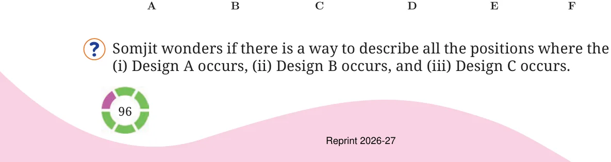
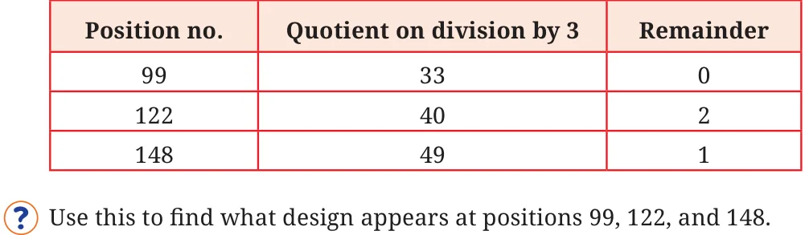

Example 12: Somjit noticed a repeating pattern along the border of a saree.

Let us start with design C. It appears for the first time at position 3, the second time at position 6.
Where would design C appear for the n time? We can see that this design appears in positions that are multiples of
- 3.So the n occurrence of Design C will be at position 3n.
th
Similarly, find the formula that gives the position where the other
Designs appear for the n time. The positions where B occurs are 2, 5, 8, 11, 14, and so on. We can see that the position of the nth appearance of Design B is one
th
less than the position at which Design C appears for the n time. Thus, the nth occurrence of Design B is at position: \(3n - 1\) Similarly, the expression describing the position at which the design A appears for the nth time is: \(3n - 2\).
Given a position number can we find out the design that appears there? Which Design appears at Position 122? If the position is a multiple of 3, then clearly we have Design C. As seen earlier, if the position is one less than a multiple of 3, it has Design B, and if it is 2 less than a multiple of 3, then it has Design A. Can the remainder obtained by dividing the position number by 3 be used for this? Observe the table below.
